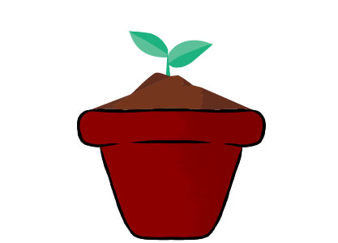

Meditation
Times can get rough with a lot of stress coming from work, school, relationship, and family. Meditation is a way to start relieving stress from your own home and space. There are many resources that you are able to use such as articles, Youtube videos, and Mediation Apps.
What is Mediation?
Meditation can be defined as a set of techniques that are intended to encourage a heightened state of awareness and focused attention. Meditation is also a consciousness-changing technique that has been shown to have a wide number of benefits on psychological well-being.
How do I start?
You can start watching guided meditation videos for free on Youtube. There are many personalitys online and many people that are willing to guide you through your experience! Here are some links
Joe Rogan Podcast: Mediation??? Lets talk about it You Will Feel Great after this 10 minute guided meditation A Ten Minute Guided Meditation to Clear Your Mind Guided Meditation for Positive Energy, Relaxation, Peace
Sleep
While Sleep in General is a very important and essential part of living, having healthy Sleep is also very imporant to Mental Health.
Not getting enough sleep can affect one physically, but it can also affect your mental sate of being and lead to more sleeping disorders.
By not getting enough sleep, it can also deeply affect other phychologial disorders such as:
- Depression
- Bipolar Disorder
- Anxiety Distorder
- ADHD
However, there are ways to combat the lack of sleep. Such as by:
- Relaxation
- Extericese
- Lifestyle Changes
- Turing on Blue Light exporsure
- Setting timers for when to sleep and wake up
All of these are simple yet effectice things that one can do to not only better their sleep, but thier mental health.
Excercise
Exercise helps improve mental health by reducing anxiety, depression, and by improving self-esteem and cognitive function. Exercise has also been found to alleviate symptoms such as low self-esteem and social withdrawal. In addition exercise can help people get into healthy habits, like creating rutines and taking care of one's own health. Any “workout” does not have to be very intense, it can be 30 min cardio sessions or 3 separate 10 min sessions. It’s easy to implement into most lifestyles and can help improve mental and physical health.

Eating Healthy
Eating healthy has been scientifically proven to help improve overall mental health. Many mental health associated disorders have been linked to nutrition deficiences including Depression, ADHD/ADD, & Anxiety related disorders.
Most of the nutrition deficiencies involve a lack of vitamins, minerals, & Omega-3 fatty acids. To get the recommeneded nutrients daily, consume a variety foods such as fruits,vegetables, salmon, dark leafy vegetables, beans, & nuts.
For more information about how nutrition is connected to mental health please got to:
www.lifeandhealth.org
www.sutterhealth.org
Asking for help
Many people who suffer from mental illness have trouble with asking others for help. In todays age, reaching out and asking for help is easier
than ever, but finding the strength to do so is difficult. Remember that there will always be people around that want to help with any challenges you face.
Here are some free, safe places that you can reach out to if you suffer from mental or substance use disorders.
Better Help - Online Counseling (40$/Week)